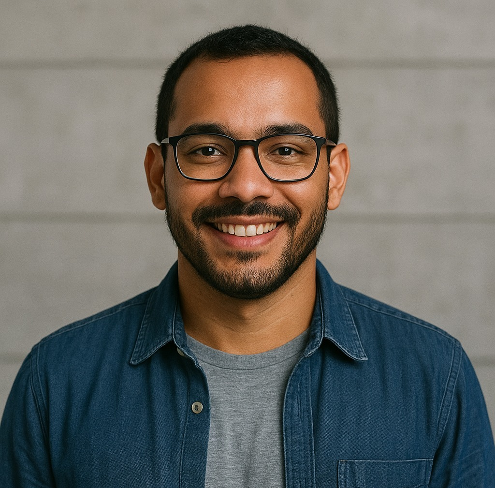

é designer de interação e pesquisadora em tecnologias emergentes, com foco em acessibilidade e design inclusivo. Formada pela UFRJ e com mestrado em Design de Experiência pela Universidade de Berlim, Luiza é fundadora do coletivo Design para Todos, que promove soluções tecnológicas com impacto social
Luiz Ferreira

Engenheiro de computador e expert em cloud computing, com uma década de experiencia em projetos escaláveis e otimização de desenvolvimento escalável, faz participação frequente do silicon computer, evento anual provido pela fintech
Rebeca Matos
Rebeca Matos é uma cientista de dados e cofundadora da startup Ecometrics especializada em tecnologia para monitoramento ambiental via satélite. Natural de Salvador, Rebeca é defensora do uso ético da inteligência artificial e atua em projetos de impacto socioambiental